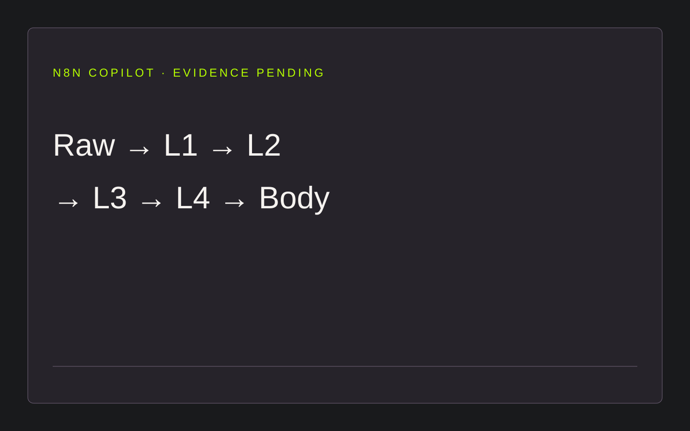

← Все кейсыn8n Copilot
Копайлот для Telegram-контента. Найдены оригинальная техническая документация и промпты; точный export workflow и Telegram-запись пока не найдены.

Что подтверждено
Raw → L1 → L2 → L3 → L4 → Body; переработка отдельного слоя по комментарию и сохранение истории. Это структура из оригинальной спецификации, не воспроизведение canvas.
Что ещё требуется
Подлинный n8n export и Telegram input/output. Предыдущая web-реконструкция исключена из публичного доказательства.
Факты и границы ↗